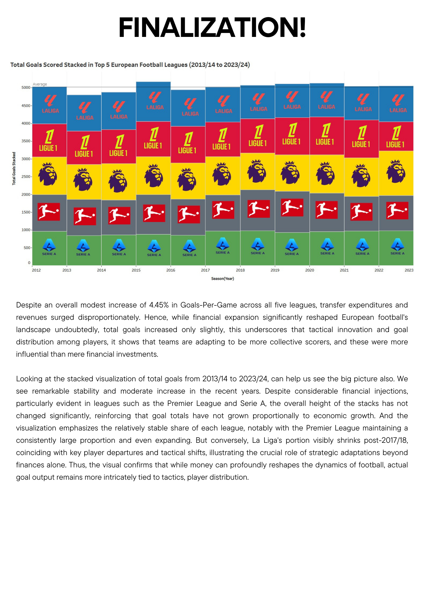
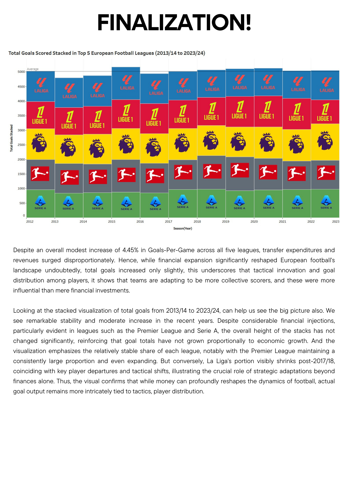

Transfermarkt Goals Distribution | Top Scorers | Own Goals
World Football | Opta | FBRef | The Analyst | Transfermarkt | Premier League Explosion | Premier League News | Ligue 1 Stats | Bundesliga Records | Serie A Stats
CIES Market Report | Man City Charges | UEFA Revenue Report
De Bruyne Rules Interview | VAR in Serie A | 5 Sub Rule | Sub Stats | BBC Substitution Rules
CIES Transfer Reports | La Liga 2019 Transfers | Revenue Statista
Premier League Transfer Spending | Big 5 Revenue

 
